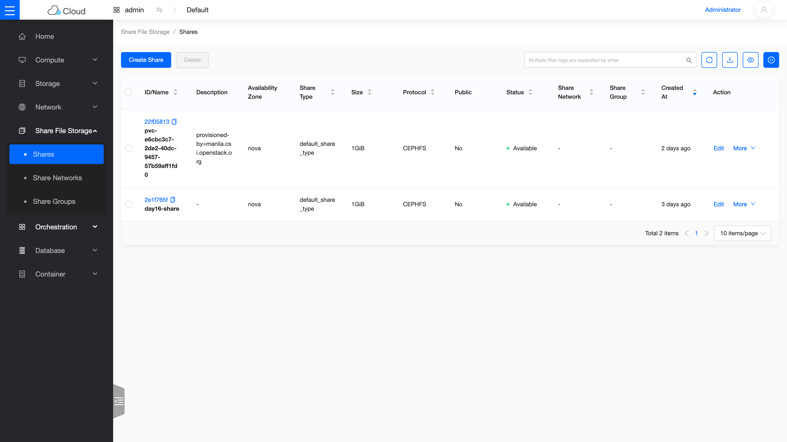
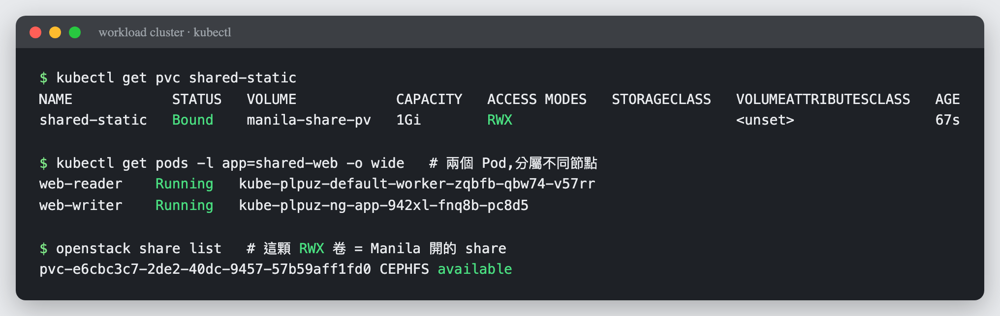
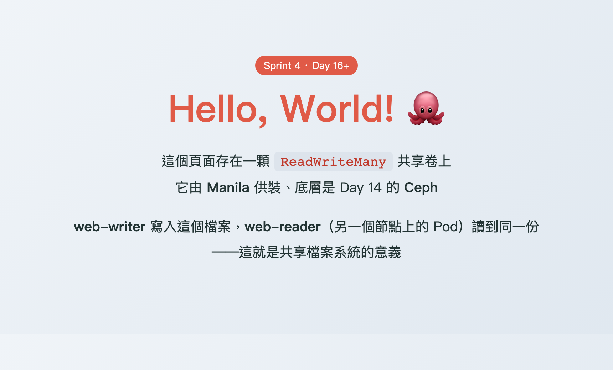

Day 16: Manila——多台機器同掛一顆碟¶
儲存三部曲的最終章:共享檔案系統。Cinder 的磁碟一次只能掛給一台機器;今天部署的 Manila 讓多台 VM(以及未來 K8s 的多個 Pod)同時讀寫同一份資料。後端就用 Day 14 的 Ceph——一套骨幹,第三種介面。

你在課程的哪裡
- 儲存三部曲:區塊(Day 3 Cinder)✅、物件(Day 15 RGW)✅、檔案(今天)。
- 今天:CephFS 當後端,部署 Manila,建立 share、授權、掛載、讀寫全流程。
- 今天之後:Day 8 的 K8s PVC 只能單 Pod 讀寫(RWO);有了 Manila,
ReadWriteMany的缺口就補上了——文末的 Day 16+ 選讀會把它真的接回 Day 8 的 cluster。
第一次接觸共享檔案系統?先讀這段¶
三種儲存的差異用「怎麼用」最好記:
| 介面 | 同時使用者 | 代表場景 | |
|---|---|---|---|
| 區塊(Cinder) | 掛成 /dev/vdb,自己分割格式化 |
一台機器 | 資料庫的資料碟 |
| 物件(RGW) | HTTP API,無掛載 | 無限 | 備份、映像檔、靜態資源 |
| 檔案(Manila) | 掛成網路資料夾,現成檔案系統 | 多台機器同時讀寫 | 共用素材庫、多實例應用的共同目錄、K8s RWX |
AWS 對應是 EFS。Manila 是 OpenStack 的「檔案分享即服務」:它不搬資料,只負責開單——在後端(我們的 CephFS)建立分享、管理配額與存取權;資料流量由客戶端直連後端。
原理與架構¶
今天用的驅動是 CephFS native:VM 直接以 Ceph 客戶端身分掛載 CephFS。Manila 這邊三個服務容器 + Ceph 那邊一個新角色:
flowchart TB
subgraph manila["Manila(Kolla 容器)"]
direction LR
API["manila-api<br/>(收單)"] --> SCH["manila-scheduler<br/>(挑後端)"] --> SHR["manila-share<br/>(對 Ceph 下指令)"]
end
SHR ==>|"建立/授權 share<br/>(走 mgr API)"| CEPH["CephFS(manila_fs)<br/>+ MDS(檔案系統的大腦)"]
VM["VM / 客戶端"] ==>|"掛載後直連讀寫<br/>(mount -t ceph)"| CEPH注意資料路徑:manila-share 只管控制面,VM 掛載後的讀寫直達 Ceph——跟 Day 3「control path 是 OpenStack 的、data path 是 Linux 的」同一個道理。
MDS(Metadata Server)是 CephFS 專屬的新角色:管目錄樹與檔名(資料本體仍存 OSD)。建立檔案系統時 cephadm 會自動部署它。
步驟¶
步驟 1:Ceph 端——建檔案系統與 Manila 專用身分¶
sudo ./cephadm shell -- ceph fs volume create manila_fs
sudo ./cephadm shell -- ceph fs set manila_fs standby_count_wanted 0 # 單機沒有備援 MDS,關掉這項健康檢查
sudo ./cephadm shell -- ceph auth get-or-create client.manila mon 'allow r' mgr 'allow rw'
約 20 秒後 ceph fs status manila_fs 應顯示 MDS active。
權限那行值得一看:client.manila 只需要 mon 讀 + mgr 讀寫——Manila 是透過 mgr 的管理 API 操作 CephFS 的,不直接碰資料,所以不需要 osd/mds 權限。最小權限原則的好示範。
步驟 2:Kolla 端——兩個設定檔(這裡埋著兩顆文件級的雷)¶
sudo mkdir -p /etc/kolla/config/manila
# ceph.conf:用官方指令產生「最小版」,再把行首空白拿掉
sudo ./cephadm shell -- ceph config generate-minimal-conf | sed 's/^[[:space:]]*//' \
| sudo tee /etc/kolla/config/manila/ceph.conf
# keyring:同樣去掉行首空白
sudo ./cephadm shell -- ceph auth get client.manila | sed 's/^[[:space:]]*//' \
| sudo tee /etc/kolla/config/manila/ceph.client.manila.keyring
兩個 sed 不是潔癖:generate-minimal-conf 的輸出帶行首縮排,而 Kolla 的設定合併器讀到縮排的 ini 會直接解析失敗——這是官方文件有提但極易忽略的一行警告。另外,keyring 的路徑要照上面放在 manila/ 正下方:官方文件某處寫了 manila-share/ 子目錄,那是文件錯誤,Kolla 程式碼實際只從 manila/ 讀。
步驟 3:globals 與部署¶
sudo tee -a /etc/kolla/globals.yml << 'EOF'
enable_manila: "yes"
enable_manila_backend_cephfs_native: "yes"
manila_cephfs_filesystem_name: "manila_fs"
EOF
source ~/kolla-venv/bin/activate
kolla-ansible deploy -i ~/all-in-one --tags manila
步驟 4:CLI 外掛與 share type¶
pip install python-manilaclient # 沒裝的話 openstack 沒有 share 子命令(見地雷 1)
source /etc/kolla/admin-openrc.sh
openstack share type create default_share_type False
那個 False 是 DHSS(driver 是否自管服務網路)——CephFS native 驅動不需要,必須是 False;照別的教學抄 True 會在建立 share 時卡死。
步驟 5:建 share、授權、真的掛起來¶
openstack share create CEPHFS 1 --name day16-share --share-type default_share_type
openstack share show day16-share -f value -c status # available(秒級)
openstack share export location list day16-share -f value -c Path
授權一個 cephx 身分並取出金鑰,然後在任何能連到 Ceph 的機器上掛載(這裡用主機示範;VM 內做法完全相同,只需裝 ceph-common):
openstack share access create day16-share cephx day16user
KEY=$(openstack share access list day16-share -f value -c 'Access Key')
sudo mkdir -p /mnt/day16
sudo mount -t ceph 10.0.0.4:6789:/volumes/_nogroup/<你的路徑> /mnt/day16 -o name=day16user,secret=$KEY
echo "manila-e2e" | sudo tee /mnt/day16/proof.txt
sudo cat /mnt/day16/proof.txt && df -h /mnt/day16 | tail -1
寫得進、讀得回、配額 1G 正確呈現——三部曲的最後一塊拼圖到位。
這顆 share 不只在 CLI 看得到——Skyline 的「Share File Storage」頁把它列得清清楚楚:size、protocol(CEPHFS)、狀態一欄到位。下圖的兩列裡,day16-share 是你剛手動建的,pvc-…(描述寫 provisioned by=manila.csi.openstack.org)則是稍後 Day 16+ 由 K8s 動態要來的——同一個共享檔案服務,CLI 與主控台看到的是同一份資料:

驗收 checkpoint¶
逐項驗證,全部符合判準才算完成今天:
| 驗證 | 判準 | 本課環境的結果 |
|---|---|---|
| Ceph 端 | manila_fs 存在、MDS active |
約 20 秒就緒 |
| Manila 服務 | openstack share service list 三服務 enabled+up |
data/scheduler/share 全 up |
| share | 建立後 available |
秒級 |
| export location | 取得 CephFS 路徑 | 10.0.0.4:6789:/volumes/… |
| 端到端 | cephx 授權 → 掛載 → 寫入讀回一致、df 顯示配額 | 符合 |
地雷記錄¶
地雷 1:openstack 沒有 share 子命令¶
同型雷第三次出現(Day 5 的 heat/barbican、以及 designate 都一樣):OpenStack CLI 的各服務指令來自各自的外掛套件。通則直接背起來:新服務部署完 CLI 沒指令,第一反應是 pip install python-<服務>client。
地雷 2:keyring 路徑與 ceph.conf 縮排——兩顆文件級的雷¶
已在步驟 2 預拆。這兩顆雷值得記住的是出處:keyring 路徑是官方文件寫錯(以 Kolla 原始碼為準);縮排則是官方工具的輸出跟官方部署工具互不相容。「文件與程式碼衝突時,程式碼才是真相」——本課程方法論的又一實例。
地雷 3:CephFS 的 pool 誕生後 PG 總數超標¶
症狀:manila_fs 建立後 ceph health 出現 too many PGs per OSD (369 > max 250)。
根因:每個 pool 都帶著預設的 PG 數出生,單 OSD 的上限很快被多個 pool 疊爆——又是單機才會撞到的邊界。
解法:lab 直接放寬上限 ceph config set mon mon_max_pg_per_osd 512。生產環境的正解是讓 autoscaler 依容量比例縮放,多 OSD 下不會發生。
Day 16+ 延伸(選讀):把 Manila 接回 Day 8 的 K8s cluster¶
這是選讀的進階整合
上面的核心課程到 host 掛載就完成了。這一節示範 Manila 最有價值的應用場景——填補 Kubernetes 的儲存缺口。內容較深(要動到兩個 CSI 驅動),但成果很值得:你會看到一個 K8s 應用要求共享儲存,而 OpenStack 自動在 Ceph 上開一顆 share 滿足它。
為什麼這個整合重要¶
回想 Day 8:我們讓 K8s 的 PVC 由 Cinder 供裝——但 Cinder 是區塊儲存,一顆 volume 一次只能掛給一個 Pod(ReadWriteOnce,RWO)。可是很多場景需要多個 Pod 同時讀寫同一份資料(ReadWriteMany,RWX):共用的上傳目錄、多副本網站的靜態資源、共享的模型檔案。RWX 正是 Cinder 給不了、而 Manila 天生就能提供的——這一節就把這塊拼上,讓 Sprint 3 的儲存故事真正完整。
運作原理¶
flowchart TB
A["K8s 應用宣告一個 RWX PVC"] --> B["Manila CSI driver<br/>(裝在 workload cluster 內)"]
B ==>|"呼叫 Manila API"| C["Manila 在 Ceph 上<br/>自動建一顆 CephFS share"]
C ==>|"share + cephx 存取金鑰"| D["ceph-csi 把 share<br/>掛進每個 Pod"]
D --> E["多個 Pod、跨不同節點<br/>同時讀寫同一份資料"]安裝需要兩個 CSI 驅動搭配:csi-driver-manila(負責跟 Manila 要 share)委派給 ceph-csi(負責實際掛載 CephFS)。兩者用 helm 裝進 Day 8 的 workload cluster。
驗證:兩個 nginx Pod 共用一顆 RWX 卷¶
建一個 ReadWriteMany 的 PVC(用 Manila 的 StorageClass),然後讓兩個 nginx Pod 掛同一顆——關鍵是確認它們被排到不同節點,這樣「跨節點共享」才有說服力:
$ kubectl get pvc shared-static
NAME STATUS VOLUME CAPACITY ACCESS MODES ...
shared-static Bound manila-share-pv 1Gi RWX ...
$ kubectl get pods -l app=shared-web -o wide
web-reader Running kube-plpuz-default-worker-... ← 節點 A
web-writer Running kube-plpuz-ng-app-... ← 節點 B(不同節點!)
$ openstack share list # 這顆 RWX 卷,就是 Manila 開的一顆 share
pvc-e6cbc3c7-... CEPHFS available

最後一行是整個整合的證據:K8s 開一個 PVC,OpenStack 這側就多了一顆同名的 share——這朵雲的儲存服務,自動滿足了它上面 K8s 應用的需求。
收尾:讓它真的 serve 一個網頁¶
叫 web-writer 寫一個 hello world HTML 到共享卷,再從另一個節點上的 web-reader 讀——它的 nginx 吐出的,正是 writer 剛寫的那一份:
kubectl exec web-writer -- sh -c 'echo "<h1>Hello, World!</h1>..." > /usr/share/nginx/html/index.html'
kubectl exec web-reader -- wget -qO- http://localhost/ # 讀到同一份頁面

這個頁面由 web-writer 寫入、web-reader(不同節點的 Pod)serve 出來,底層是 Manila 供裝、Ceph 承載的共享卷。Sprint 3 的 Cinder RWO 加上今天的 Manila RWX,K8s 的兩種儲存需求現在都由你自己的雲滿足了。
實作時的地雷(如果你要自己做)
這個整合有兩個 CSI 之間的磨合點,踩過才知道:
- provisioner 名稱有 protocol 前綴:csi-driver-manila 的 CephFS driver 實際註冊成 cephfs.manila.csi.openstack.org(不是 manila.csi.openstack.org),StorageClass 的 provisioner 要寫對才綁得到 PVC。
- node-stage secret 要放 OpenStack 認證(不是 ceph key):node 掛載時 Manila CSI 要用 OS 憑證去跟 Manila 查 share 的存取規則。
- 靜態掛載缺 fsName 會失敗:ceph-csi 掛 CephFS 必須知道檔案系統名(我們的是 manila_fs),少了它報 missing required field fsName。
從你的瀏覽器看到這個網頁:兩種路徑¶
網頁在 cluster 裡跑起來了,但你的電腦要怎麼連到它?這個問題本身就是一堂網路課——因為 Pod 活在 cluster 內部網路(10.100.x.x),外界碰不到。有兩條路,一條給 lab、一條給正式環境:
路徑一:kubectl port-forward(lab 臨時用,本課採用)¶
kubectl port-forward 借用 K8s API server 當跳板,打一條「臨時隧道」直通某個 Pod——不需要負載平衡器、不需要對外 IP,一行指令就通。因為我們的 lab 從你的電腦到 cluster 隔著兩層(Azure lab VM、cluster 內網),所以要串接兩段隧道:
flowchart LR
A["你的瀏覽器<br/>localhost:8888"] -->|"SSH tunnel"| B["Azure lab VM<br/>(10.0.0.4)"]
B -->|"kubectl port-forward<br/>(借道 K8s API server)"| C["web-reader Pod<br/>裡的 nginx"]
C --> D["讀取 Manila RWX 卷<br/>上的 index.html"]# 在 lab VM 上:把 pod 的 80 埠轉發到 VM 的 8888
kubectl port-forward --address 0.0.0.0 pod/web-reader 8888:80 &
# 在你的電腦上:把 VM 的 8888 接到本機 8888
ssh -L 8888:127.0.0.1:8888 azureuser@<VM公網IP>
# 瀏覽器開 http://localhost:8888 —— 就看到那個 hello world 頁
這條路的特點是臨時、點對點、只給操作者自己看——適合除錯或 demo,不是給真實使用者用的入口。
路徑二:Service type=LoadBalancer(正式環境的做法)¶
正式環境會用你在 Day 8 學過的方式:把 Service 宣告成 type=LoadBalancer,K8s 的 CCM 就會自動叫 Octavia 開一台負載平衡器、掛上對外 IP,把流量分流到每個節點上的 Pod:
flowchart LR
U["真實使用者<br/>(從外部網路)"] --> LB["Octavia 負載平衡器<br/>(對外 IP)"]
LB -->|"分流"| N1["節點 A 的 Pod"]
LB -->|"分流"| N2["節點 B 的 Pod"]
N1 --> V["Manila RWX 共享卷<br/>(兩個 Pod 讀寫同一份)"]
N2 --> V這才是「一個公開網站」該有的樣子:有穩定的對外 IP、有負載平衡、多個 Pod 分攤流量——而它們共用的正是今天這顆 RWX 卷。
在本 lab 開 LoadBalancer 會撞到 Day 8 的老朋友
如果你在這座 cluster 試 type=LoadBalancer,CCM 建 LB 時會失敗:Provider 'amphorav2' is not enabled。這正是 Day 8 的地雷 #3——CCM 預設要 amphorav2,而我們的 Octavia 只啟用了 amphora。所以本課的 demo 走 port-forward(路徑一);要走 LoadBalancer,得依 Day 8 的解法給 cluster 帶上 octavia_provider=amphora 標籤。同一顆雷在不同章節重逢,正好說明它是這套 lab 架構的固有特性,不是偶發。
延伸閱讀¶
想往下深挖,從這幾份開始:
- Manila CephFS driver 官方文件 —— native 與 NFS 兩種模式的差異、
client.manila權限的出處。 - Kolla-Ansible 的 Manila 指南 —— Kolla 側部署選項的官方對照(注意本章地雷 2 提到的文件勘誤)。
- CephFS 官方文件 —— MDS、subvolume、配額這些概念的權威定義。
- Manila CSI plugin —— Day 16+ 那套 K8s 整合的官方文件與部署選項。
下一步¶
儲存三部曲完成——你的雲現在同時提供區塊、物件、檔案三種儲存,全部長在同一套 Ceph 上。Day 17 換個領域:給雲加上 DNS 服務,讓每台 VM 自動擁有自己的域名。